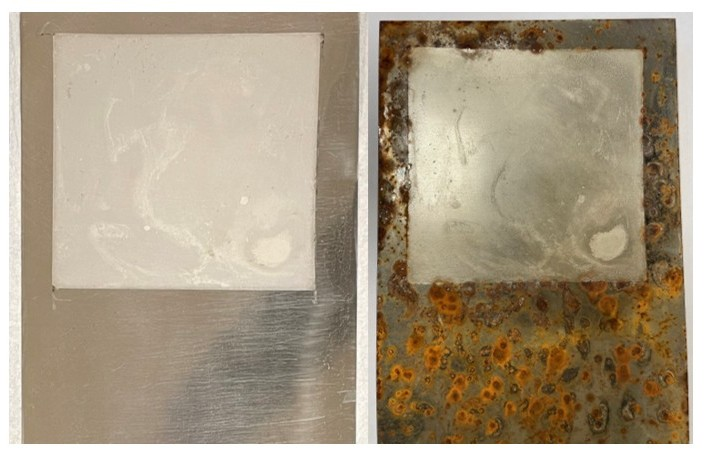
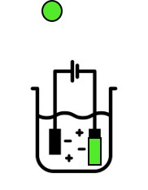
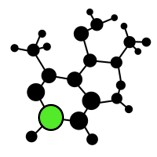

Mission-Focused Support for the Department of the Navy
Shaw & Townsend Innovations, LLC delivers disciplined, measurable solutions that improve performance, readiness, and execution across maintenance, sustainment, and advanced materials technology.
What We Do
We integrate materials chemistry, corrosion prevention, electroplating, and nanomaterials expertise with decades of U.S. Navy maintenance and sustainment experience. Our team translates research into operational readiness—delivering durable coatings, cold spray repair solutions, and innovative maintenance practices that reduce risk and increase availability.
From laboratory-scale development to fleet implementation, we focus on reliability, maintainability, and mission readiness.
Core Capabilities
Materials Chemistry
Design and optimization of metal coatings, composites, and nanomaterials for demanding environments.

Corrosion Prevention
Corrosion-resistant finishes and maintenance strategies that extend asset life and reduce lifecycle cost.

Electroplating
Advanced electroplating methods, including electrostamping, for large, irregular, and water-sensitive structures.

Nanomaterials
Integration of nanoscale additives and functional particles into coatings for enhanced performance.

Cold Spray Glow Powder
Durable, glowing composite coatings for safety, inspection, and mission readiness applications.

Laboratory Management
Full-spectrum lab operations, safety, and quality systems supporting advanced materials research.

US Navy Experience
28+ years of aviation maintenance, logistics, and sustainment experience embedded in every project.

Program Management
Cost, schedule, and performance oversight for high-impact projects across DoD and industry.